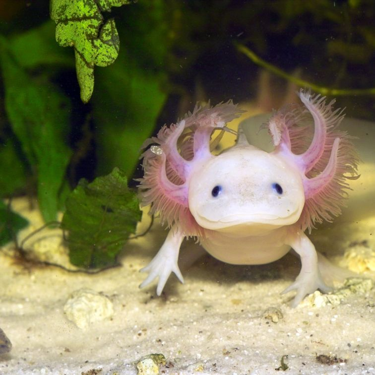

¡Bienvenidos a México!
En esta seccion hablaremos sobre los lugares de México. que puedes visitar y un poco sobre su historia.
Algunos lugares interesantes que puedes visitar son:
- Ciudad de México
- Cancun
- Ruinas Maya

Esta es la piramide Kukulcan y es parte del Chichen Itza, ruinas maya que se encuentran en la peninsula del Yucatan.
Aprende mas las ruinas maya "Sabias que los maya eran una de las civilizaciones mas avanzadas y sofisticadas" - Arlo el Ajolote